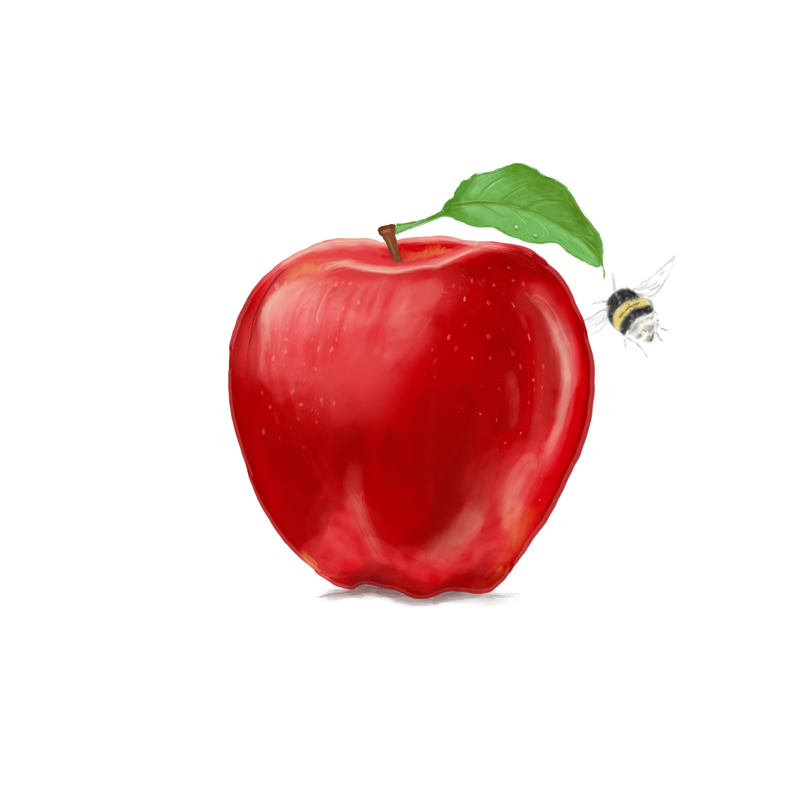

Blandade grafiska jobb
Logotyper
Linte logotype

Idén till logotypen kommer från företagsnamnet Lintie som är en sammansättning av mitt namn: Linda
Tiensivu.
Lintie är också namnet på en fågel: Acanthis flammea. Den fick ge inspiration till fågeln. Eftersom jag
har flera verksamheter på mitt företag har jag samma grund, men olika text under Lintie, exempelvis
Lintie Design.
Scandinavian Taste Experience logotype
I den här logotypen ville jag fånga fjällen och skogen. Från början tänkte jag ha ledkryss, men det
kändes mer naturligt att ha kniv och gaffel eftersom det handlar om lokal mat. Du kan läsa mer om
projektet Scandinavian Taste Experience under fliken webbsidor.
Logotype skoluppgift
Den här logotypen gjorde jag till en skoluppgift som beskrivs närmare nedan. Eftersom huvuduppgiften inte
var att skapa en logotype, gorde jag den snabt i programmet canva.Jag ville fånga känslan av
exklusivitet och värme. Tassen symboliserar att märket är djurvänligt och riktar sig till veganer.
Grafisk Design
E16 skylt
Under min andra praktik inom affärsutvecklarutbildningen fick jag möjligheten att arbeta som
projektledare och genomföra en ide som jag fått under utbildningen: ett heldagsevent på Storsjön. Den
här bilden gjorde jag som reklam för eventet och den syntes både i sociala medier och på ljustavlorna på
E16.
Digital Konst
Min första bild i Procreate

Jag har alltid tyckt om att rita och detta är något jag önskar jag fick mer tid till. Bilden är ritad
digitalt i programmet Procreate. Jag gillar att rita både verklighetstrogna bilder men också gulliga,
fiktiva karaktärer.
Copywriting
Skoluppgift Copywriting

Uppgiften var att ta fram copy för ett fiktivt kaffe som var berikat med B och C vitaminer. Vi skulle ta
fram en fysisk affish som skulle sitta på busskurer. Jag kom fram tll att rikta mig mot veganer,
eftersom de har svårt att få i sig framförallt B12. Bilden valde jag efter att ha promptat en hel del i
olika AI-verktyg och slutligen redigera bort det jag inte ville ha var i bilden. Jag ville väcka
uppmärksamhet genom kontrasten av det gulliga i bilden mot det kaxiga i texten. Det skulle vara mer än
ett kaffe, ett helt community. Snäll, omtänksam och våga stå upp för dig själv och djuren var det jag
hade som ledord. I min fantasi slulle affishen sitta på busskurerna under vintern och genom sina varma
färger och mysiga miljö locka till sig potentiella kunder.
Förpackningen
Det ingick som sagt var inte i uppgiften att ta fram logotype, förpackning och design av den, men jag fick feeling och
det hjälpte mig att nå slutresultatet när jag förstod hur den slulle se ut. Jag ville fånga en varm men
exlusiv känsla. Genom att göra kaffeförpackningen i frostat glas skulle den stå ut i butikerna och kunna
stå framme i köket som en fin kaffeburk.
Refill
Eftersom en av mina fiktiva kriterier för varumärket var att det kulle vara hållbart, så tog jag även
fram en refillpåse i en brun varm ton.
Typografi och grafisk design
Leadmagnet hälsokurs
Det här är både en skoluppgift i typografi och grafisk design. Jag valde att göra något som jag kan
använda i mitt företag, en leadmagnet för att locka till vidare kurser som för närvarande är under
uppbyggnad. Färgvalet gjorde jag med utgångspunkt i den gröna färgen som oftast förknipppas med hälsa.
Typsnittet valde jag för att de helt enkelt passade in med figurerna som jag ritat till. Glaset
företställer smoothie och lotusblomman är en symbol för yoga som är en del av kursen.